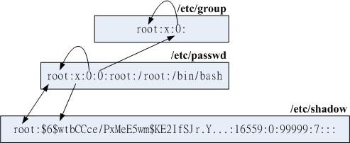
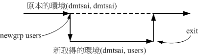

13.1 Linux 的帐号与群组
管理员的工作中，相当重要的一环就是“管理帐号”啦！因为整个系统都是你在管理的， 并且所有一般用户的帐号申请，都必须要通过你的协助才行！所以你就必须要了解一下如何管理好一个服务器主机的帐号啦！ 在管理 Linux 主机的帐号时，我们必须先来了解一下 Linux 到底是如何辨别每一个使用者的！
13.1.1 使用者识别码： UID 与 GID
虽然我们登陆 Linux 主机的时候，输入的是我们的帐号，但是其实 Linux 主机并不会直接认识你的“帐号名称”的，他仅认识 ID 啊 （ID 就是一组号码啦）。 由于计算机仅认识 0 与 1，所以主机对于数字比较有概念的；至于帐号只是为了让人们容易记忆而已。 而你的 ID 与帐号的对应就在 /etc/passwd 当中哩。

Tips 如果你曾经在网络上下载过 tarball 类型的文件， 那么应该不难发现，在解压缩之后的文件中，文件拥有者的字段竟然显示“不明的数字”？奇怪吧？这没什么好奇怪的，因为 Linux 说实在话，他真的只认识代表你身份的号码而已！
那么到底有几种 ID 呢？还记得我们在第五章内有提到过， 每一个文件都具有“拥有人与拥有群组”的属性吗？没错啦～每个登陆的使用者至少都会取得两个 ID ，一个是使用者 ID （User ID ，简称 UID）、一个是群组 ID （Group ID ，简称 GID）。
那么文件如何判别他的拥有者与群组呢？其实就是利用 UID 与 GID 啦！每一个文件都会有所谓的拥有者 ID 与拥有群组 ID ，当我们有要显示文件属性的需求时，系统会依据 /etc/passwd 与 /etc/group 的内容， 找到 UID / GID 对应的帐号与群组名称再显示出来！我们可以作个小实验，你可以用 root 的身份 vim /etc/passwd ，然后将你的一般身份的使用者的 ID 随便改一个号码，然后再到你的一般身份的目录下看看原先该帐号拥有的文件，你会发现该文件的拥有人变成了 “数字了”呵呵！这样可以理解了吗？来看看下面的例子：
# 1\. 先察看一下，系统里面有没有一个名为 dmtsai 的用户？
[root@study ~]# id dmtsai
uid=1000（dmtsai） gid=1000（dmtsai） groups=1000（dmtsai）,10（wheel） <==确定有这个帐号喔！
[root@study ~]# ll -d /home/dmtsai
drwx------. 17 dmtsai dmtsai 4096 Jul 17 19:51 /home/dmtsai
# 瞧一瞧，使用者的字段正是 dmtsai 本身喔！
# 2\. 修改一下，将刚刚我们的 dmtsai 的 1000 UID 改为 2000 看看：
[root@study ~]# vim /etc/passwd
....（前面省略）....
dmtsai:x:2000:1000:dmtsai:/home/dmtsai:/bin/bash <==修改一下特殊字体部分，由 1000 改过来
[root@study ~]# ll -d /home/dmtsai
drwx------. 17 1000 dmtsai 4096 Jul 17 19:51 /home/dmtsai
# 很害怕吧！怎么变成 1000 了？因为文件只会记录 UID 的数字而已！
# 因为我们乱改，所以导致 1000 找不到对应的帐号，因此显示数字！
# 3\. 记得将刚刚的 2000 改回来！
[root@study ~]# vim /etc/passwd
....（前面省略）....
dmtsai:x:1000:1000:dmtsai:/home/dmtsai:/bin/bash <==“务必一定要”改回来！
你一定要了解的是，上面的例子仅是在说明 UID 与帐号的对应性，在一部正常运行的 Linux 主机环境下，上面的动作不可随便进行， 这是因为系统上已经有很多的数据被创建存在了，随意修改系统上某些帐号的 UID 很可能会导致某些程序无法进行，这将导致系统无法顺利运行的结果， 因为权限的问题啊！所以，了解了之后，请赶快回到 /etc/passwd 里面，将数字改回来喔！
Tips 举例来说，如果上面的测试最后一个步骤没有将 2000 改回原本的 UID，那么当 dmtsai 下次登陆时将没有办法进入自己的主文件夹！ 因为他的 UID 已经改为 2000 ，但是他的主文件夹 （/home/dmtsai） 却记录的是 1000 ，由于权限是 700 ， 因此他将无法进入原本的主文件夹！是否非常严重啊？
13.1.2 使用者帐号
Linux 系统上面的使用者如果需要登陆主机以取得 shell 的环境来工作时，他需要如何进行呢？ 首先，他必须要在计算机前面利用 tty1~tty6 的终端机提供的 login 接口，并输入帐号与密码后才能够登陆。 如果是通过网络的话，那至少使用者就得要学习 ssh 这个功能了 （服务器篇再来谈）。 那么你输入帐号密码后，系统帮你处理了什么呢？
先找寻 /etc/passwd 里面是否有你输入的帐号？如果没有则跳出，如果有的话则将该帐号对应的 UID 与 GID （在 /etc/group 中） 读出来，另外，该帐号的主文件夹与 shell 设置也一并读出；
再来则是核对密码表啦！这时 Linux 会进入 /etc/shadow 里面找出对应的帐号与 UID，然后核对一下你刚刚输入的密码与里头的密码是否相符？
如果一切都 OK 的话，就进入 Shell 控管的阶段啰！
大致上的情况就像这样，所以当你要登陆你的 Linux 主机的时候，那个 /etc/passwd 与 /etc/shadow 就必须要让系统读取啦 （这也是很多攻击者会将特殊帐号写到 /etc/passwd 里头去的缘故），所以呢，如果你要备份 Linux 的系统的帐号的话，那么这两个文件就一定需要备份才行呦！
由上面的流程我们也知道，跟使用者帐号有关的有两个非常重要的文件，一个是管理使用者 UID/GID 重要参数的 /etc/passwd ，一个则是专门管理密码相关数据的 /etc/shadow 啰！那这两个文件的内容就非常值得进行研究啦！ 下面我们会简单的介绍这两个文件，详细的说明可以参考 man 5 passwd 及 man 5 shadow [1]。
- /etc/passwd 文件结构
这个文件的构造是这样的：每一行都代表一个帐号，有几行就代表有几个帐号在你的系统中！ 不过需要特别留意的是，里头很多帐号本来就是系统正常运行所必须要的，我们可以简称他为系统帐号， 例如 bin, daemon, adm, nobody 等等，这些帐号请不要随意的杀掉他呢！这个文件的内容有点像这样：
Tips 鸟哥在接触 Linux 之前曾经碰过 Solaris 系统 （1999 年），当时鸟哥啥也不清楚！由于“听说”Linux 上面的帐号越复杂会导致系统越危险！所以鸟哥就将 /etc/passwd 上面的帐号全部删除到只剩下 root 与鸟哥自己用的一般帐号！结果你猜发生什么事？那就是....调用升阳的工程师来维护系统 @_@！糗到一个不行！大家不要学啊！
[root@study ~]# head -n 4 /etc/passwd
root:x:0:0:root:/root:/bin/bash <==等一下做为下面说明用
bin:x:1:1:bin:/bin:/sbin/nologin
daemon:x:2:2:daemon:/sbin:/sbin/nologin
adm:x:3:4:adm:/var/adm:/sbin/nologin
我们先来看一下每个 Linux 系统都会有的第一行，就是 root 这个系统管理员那一行好了， 你可以明显的看出来，每一行使用“:”分隔开，共有七个咚咚，分别是：
帐号名称： 就是帐号啦！用来提供给对数字不太敏感的人类使用来登陆系统的！需要用来对应 UID 喔。例如 root 的 UID 对应就是 0 （第三字段）；
密码： 早期 Unix 系统的密码就是放在这字段上！但是因为这个文件的特性是所有的程序都能够读取，这样一来很容易造成密码数据被窃取， 因此后来就将这个字段的密码数据给他改放到 /etc/shadow 中了。所以这里你会看到一个“ x ”，呵呵！
UID： 这个就是使用者识别码啰！通常 Linux 对于 UID 有几个限制需要说给您了解一下：
| id 范围 | 该 ID 使用者特性 | | 0（系统管理员） | 当 UID 是 0 时，代表这个帐号是“系统管理员”！ 所以当你要让其他的帐号名称也具有 root 的权限时，将该帐号的 UID 改为 0 即可。 这也就是说，一部系统上面的系统管理员不见得只有 root 喔！ 不过，很不建议有多个帐号的 UID 是 0 啦～容易让系统管理员混乱！ | | 1~999（系统帐号） | 保留给系统使用的 ID，其实除了 0 之外，其他的 UID 权限与特性并没有不一样。默认 1000 以下的数字让给系统作为保留帐号只是一个习惯。由于系统上面启动的网络服务或背景服务希望使用较小的权限去运行，因此不希望使用 root 的身份去执行这些服务， 所以我们就得要提供这些运行中程序的拥有者帐号才行。这些系统帐号通常是不可登陆的， 所以才会有我们在[第十章](../Text/index.html)提到的 /sbin/nologin 这个特殊的 shell 存在。根据系统帐号的由来，通常这类帐号又约略被区分为两种：1~200：由 distributions 自行创建的系统帐号；201~999：若使用者有系统帐号需求时，可以使用的帐号 UID。 | | 1000~60000（可登陆帐号） | 给一般使用者用的。事实上，目前的 linux 核心 （3.10.x 版）已经可以支持到 4294967295 （2^32-1） 这么大的 UID 号码喔！ |上面这样说明可以了解了吗？是的， UID 为 0 的时候，就是 root 呦！所以请特别留意一下你的 /etc/passwd 文件！
GID： 这个与 /etc/group 有关！其实 /etc/group 的观念与 /etc/passwd 差不多，只是他是用来规范群组名称与 GID 的对应而已！
使用者信息说明栏： 这个字段基本上并没有什么重要用途，只是用来解释这个帐号的意义而已！不过，如果您提供使用 finger 的功能时， 这个字段可以提供很多的讯息呢！本章后面的 chfn 指令会来解释这里的说明。
主文件夹： 这是使用者的主文件夹，以上面为例， root 的主文件夹在 /root ，所以当 root 登陆之后，就会立刻跑到 /root 目录里头啦！呵呵！ 如果你有个帐号的使用空间特别的大，你想要将该帐号的主文件夹移动到其他的硬盘去该怎么作？ 没有错！可以在这个字段进行修改呦！默认的使用者主文件夹在 /home/yourIDname
Shell： 我们在第十章 BASH 提到很多次，当使用者登陆系统后就会取得一个 Shell 来与系统的核心沟通以进行使用者的操作任务。那为何默认 shell 会使用 bash 呢？就是在这个字段指定的啰！ 这里比较需要注意的是，有一个 shell 可以用来替代成让帐号无法取得 shell 环境的登陆动作！那就是 /sbin/nologin 这个东西！这也可以用来制作纯 pop 邮件帐号者的数据呢！
/etc/shadow 文件结构
我们知道很多程序的运行都与权限有关，而权限与 UID/GID 有关！因此各程序当然需要读取 /etc/passwd 来了解不同帐号的权限。 因此 /etc/passwd 的权限需设置为 -rw-r--r-- 这样的情况， 虽然早期的密码也有加密过，但却放置到 /etc/passwd 的第二个字段上！这样一来很容易被有心人士所窃取的， 加密过的密码也能够通过暴力破解法去 trial and error （试误） 找出来！
因为这样的关系，所以后来发展出将密码移动到 /etc/shadow 这个文件分隔开来的技术， 而且还加入很多的密码限制参数在 /etc/shadow 里头呢！在这里，我们先来了解一下这个文件的构造吧！ 鸟哥的 /etc/shadow 文件有点像这样：
[root@study ~]# head -n 4 /etc/shadow
root:$6$wtbCCce/PxMeE5wm$KE2IfSJr.YLP7Rcai6oa/T7KFhO...:16559:0:99999:7::: <==下面说明用
bin:*:16372:0:99999:7:::
daemon:*:16372:0:99999:7:::
adm:*:16372:0:99999:7:::
基本上， shadow 同样以“:”作为分隔符号，如果数一数，会发现共有九个字段啊，这九个字段的用途是这样的：
帐号名称： 由于密码也需要与帐号对应啊～因此，这个文件的第一栏就是帐号，必须要与 /etc/passwd 相同才行！
密码： 这个字段内的数据才是真正的密码，而且是经过编码的密码 （加密） 啦！ 你只会看到有一些特殊符号的字母就是了！需要特别留意的是，虽然这些加密过的密码很难被解出来， 但是“很难”不等于“不会”，所以，这个文件的默认权限是“-rw-------”或者是“----------”，亦即只有 root 才可以读写就是了！你得随时注意，不要不小心更动了这个文件的权限呢！
另外，由于各种密码编码的技术不一样，因此不同的编码系统会造成这个字段的长度不相同。 举例来说，旧式的 DES, MD5 编码系统产生的密码长度就与目前惯用的 SHA 不同[2]！SHA 的密码长度明显的比较长些。由于固定的编码系统产生的密码长度必须一致，因此“当你让这个字段的长度改变后，该密码就会失效（算不出来）”。 很多软件通过这个功能，在此字段前加上 ! 或 * 改变密码字段长度，就会让密码“暂时失效”了。
最近更动密码的日期： 这个字段记录了“更动密码那一天”的日期，不过，很奇怪呀！在我的例子中怎么会是 16559 呢？呵呵，这个是因为计算 Linux 日期的时间是以 1970 年 1 月 1 日作为 1 而累加的日期，1971 年 1 月 1 日则为 366 啦！ 得注意一下这个数据呦！上述的 16559 指的就是 2015-05-04 那一天啦！了解乎？ 而想要了解该日期可以使用本章后面 chage 指令的帮忙！至于想要知道某个日期的累积日数， 可使用如下的程序计算：
[root@study ~]# echo $（（$（date --date="2015/05/04" +%s）/86400+1）） 16559上述指令中，2015/05/04 为你想要计算的日期，86400 为每一天的秒数， %s 为 1970/01/01 以来的累积总秒数。 由于 bash 仅支持整数，因此最终需要加上 1 补齐 1970/01/01 当天。
密码不可被更动的天数：（与第 3 字段相比） 第四个字段记录了：这个帐号的密码在最近一次被更改后需要经过几天才可以再被变更！如果是 0 的话， 表示密码随时可以更动的意思。这的限制是为了怕密码被某些人一改再改而设计的！如果设置为 20 天的话，那么当你设置了密码之后， 20 天之内都无法改变这个密码呦！
密码需要重新变更的天数：（与第 3 字段相比） 经常变更密码是个好习惯！为了强制要求使用者变更密码，这个字段可以指定在最近一次更改密码后， 在多少天数内需要再次的变更密码才行。你必须要在这个天数内重新设置你的密码，否则这个帐号的密码将会“变为过期特性”。 而如果像上面的 99999 （计算为 273 年） 的话，那就表示，呵呵，密码的变更没有强制性之意。
密码需要变更期限前的警告天数：（与第 5 字段相比） 当帐号的密码有效期限快要到的时候 （第 5 字段），系统会依据这个字段的设置，发出“警告”言论给这个帐号，提醒他“再过 n 天你的密码就要过期了，请尽快重新设置你的密码呦！”，如上面的例子，则是密码到期之前的 7 天之内，系统会警告该用户。
密码过期后的帐号宽限时间（密码失效日）：（与第 5 字段相比） 密码有效日期为“更新日期（第3字段）”+“重新变更日期（第5字段）”，过了该期限后使用者依旧没有更新密码，那该密码就算过期了。 虽然密码过期但是该帐号还是可以用来进行其他工作的，包括登陆系统取得 bash 。不过如果密码过期了， 那当你登陆系统时，系统会强制要求你必须要重新设置密码才能登陆继续使用喔，这就是密码过期特性。
那这个字段的功能是什么呢？是在密码过期几天后，如果使用者还是没有登陆更改密码，那么这个帐号的密码将会“失效”， 亦即该帐号再也无法使用该密码登陆了。要注意密码过期与密码失效并不相同。
帐号失效日期： 这个日期跟第三个字段一样，都是使用 1970 年以来的总日数设置。这个字段表示： 这个帐号在此字段规定的日期之后，将无法再使用。 就是所谓的“帐号失效”，此时不论你的密码是否有过期，这个“帐号”都不能再被使用！ 这个字段会被使用通常应该是在“收费服务”的系统中，你可以规定一个日期让该帐号不能再使用啦！
保留： 最后一个字段是保留的，看以后有没有新功能加入。
举个例子来说好了，假如我的 dmtsai 这个使用者的密码栏如下所示：
dmtsai:$6$M4IphgNP2TmlXaSS$B418YFroYxxmm....:16559:5:60:7:5:16679:
这表示什么呢？先要注意的是 16559 是 2015/05/04 。所以 dmtsai 这个使用者的密码相关意义是：
由于密码几乎仅能单向运算（由明码计算成为密码，无法由密码反推回明码），因此由上表的数据我们无法得知 dmstai 的实际密码明文 （第二个字段）；
此帐号最近一次更动密码的日期是 2015/05/04 （16559）；
能够再次修改密码的时间是 5 天以后，也就是 2015/05/09 以前 dmtsai 不能修改自己的密码；如果使用者还是尝试要更动自己的密码，系统就会出现这样的讯息：
You must wait longer to change your password passwd: Authentication token manipulation error画面中告诉我们：你必须要等待更久的时间才能够变更密码之意啦！
由于密码过期日期定义为 60 天后，亦即累积日数为： 16559+60=16619，经过计算得到此日数代表日期为 2015/07/03。 这表示：“使用者必须要在 2015/05/09 （前 5 天不能改） 到 2015/07/03 之间的 60 天限制内去修改自己的密码，若 2015/07/03 之后还是没有变更密码时，该密码就宣告为过期”了！
警告日期设为 7 天，亦即是密码过期日前的 7 天，在本例中则代表 2015/06/26 ~ 2015/07/03 这七天。 如果使用者一直没有更改密码，那么在这 7 天中，只要 dmtsai 登陆系统就会发现如下的讯息：
Warning: your password will expire in 5 days如果该帐号一直到 2015/07/03 都没有更改密码，那么密码就过期了。但是由于有 5 天的宽限天数， 因此 dmtsai 在 2015/07/08 前都还可以使用旧密码登陆主机。 不过登陆时会出现强制更改密码的情况，画面有点像下面这样：
You are required to change your password immediately （password aged） WARNING: Your password has expired. You must change your password now and login again! Changing password for user dmtsai. Changing password for dmtsai （current） UNIX password:你必须要输入一次旧密码以及两次新密码后，才能够开始使用系统的各项资源。如果你是在 2015/07/08 以后尝试以 dmtsai 登陆的话，那么就会出现如下的错误讯息且无法登陆，因为此时你的密码就失效去啦！
Your account has expired; please contact your system administrator如果使用者在 2015/07/03 以前变更过密码，那么第 3 个字段的那个 16559 的天数就会跟着改变，因此， 所有的限制日期也会跟着相对变动喔！^_^
无论使用者如何动作，到了 16679 （大约是 2015/09/01 左右） 该帐号就失效了～
通过这样的说明，您应该会比较容易理解了吧？由于 shadow 有这样的重要性，因此可不能随意修改喔！ 但在某些情况下面你得要使用各种方法来处理这个文件的！举例来说，常常听到人家说：“我的密码忘记了”， 或者是“我的密码不晓得被谁改过，跟原先的不一样了”，这个时候怎么办？
一般用户的密码忘记了：这个最容易解决，请系统管理员帮忙， 他会重新设置好你的密码而不需要知道你的旧密码！利用 root 的身份使用 passwd 指令来处理即可。
root 密码忘记了：这就麻烦了！因为你无法使用 root 的身份登陆了嘛！ 但我们知道 root 的密码在 /etc/shadow 当中，因此你可以使用各种可行的方法开机进入 Linux 再去修改。 例如重新开机进入单人维护模式（第十九章）后，系统会主动的给予 root 权限的 bash 接口， 此时再以 passwd 修改密码即可；或以 Live CD 开机后挂载根目录去修改 /etc/shadow，将里面的 root 的密码字段清空， 再重新开机后 root 将不用密码即可登陆！登陆后再赶快以 passwd 指令去设置 root 密码即可。
Tips 曾经听过一则笑话，某位老师主要是在教授 Linux 操作系统，但是他是兼任的老师，因此对于该系的计算机环境不熟。 由于当初安装该计算机教室 Linux 操作系统的人员已经离职且找不到联络方式了，也就是说 root 密码已经没有人晓得了！ 此时该老师就对学生说：“在 Linux 里面 root 密码不见了，我们只能重新安装”...感觉有点无力～ 又是个被 Windows 制约的人才！
另外，由于 Linux 的新旧版本差异颇大，旧的版本 （CentOS 5.x 以前） 还活在很多服务器内！因此，如果你想要知道 shadow 是使用哪种加密的机制时， 可以通过下面的方法去查询喔！
[root@study ~]# authconfig --test | grep hashing
password hashing algorithm is sha512
# 这就是目前的密码加密机制！
13.1.3 关于群组： 有效与初始群组、groups, newgrp
认识了帐号相关的两个文件 /etc/passwd 与 /etc/shadow 之后，你或许还是会觉得奇怪， 那么群组的配置文件在哪里？还有，在 /etc/passwd 的第四栏不是所谓的 GID 吗？那又是啥？ 呵呵～此时就需要了解 /etc/group 与 /etc/gshadow 啰～
- /etc/group 文件结构
这个文件就是在记录 GID 与群组名称的对应了～鸟哥测试机的 /etc/group 内容有点像这样：
[root@study ~]# head -n 4 /etc/group
root:x:0:
bin:x:1:
daemon:x:2:
sys:x:3:
这个文件每一行代表一个群组，也是以冒号“:”作为字段的分隔符号，共分为四栏，每一字段的意义是：
群组名称： 就是群组名称啦！同样用来给人类使用的，基本上需要与第三字段的 GID 对应。
群组密码： 通常不需要设置，这个设置通常是给“群组管理员”使用的，目前很少有这个机会设置群组管理员啦！ 同样的，密码已经移动到 /etc/gshadow 去，因此这个字段只会存在一个“x”而已；
GID： 就是群组的 ID 啊。我们 /etc/passwd 第四个字段使用的 GID 对应的群组名，就是由这里对应出来的！
此群组支持的帐号名称： 我们知道一个帐号可以加入多个群组，那某个帐号想要加入此群组时，将该帐号填入这个字段即可。 举例来说，如果我想要让 dmtsai 与 alex 也加入 root 这个群组，那么在第一行的最后面加上“dmtsai,alex”，注意不要有空格， 使成为“ root:x:0:dmtsai,alex ”就可以啰～
谈完了 /etc/passwd, /etc/shadow, /etc/group 之后，我们可以使用一个简单的图示来了解一下 UID / GID 与密码之间的关系， 图示如下。其实重点是 /etc/passwd 啦，其他相关的数据都是根据这个文件的字段去找寻出来的。 下图中， root 的 UID 是 0 ，而 GID 也是 0 ，去找 /etc/group 可以知道 GID 为 0 时的群组名称就是 root 哩。 至于密码的寻找中，会找到 /etc/shadow 与 /etc/passwd 内同帐号名称的那一行，就是密码相关数据啰。
图13.1.1、帐号相关文件之间的 UID/GID 与密码相关性示意图
至于在 /etc/group 比较重要的特色在于第四栏啦，因为每个使用者都可以拥有多个支持的群组，这就好比在学校念书的时候， 我们可以加入多个社团一样！ ^_^。不过这里你或许会觉得奇怪的，那就是：“假如我同时加入多个群组，那么我在作业的时候，到底是以那个群组为准？” 下面我们就来谈一谈这个“有效群组”的概念。
Tips 请注意，新版的 Linux 中，初始群组的用户群已经不会加入在第四个字段！例如我们知道 root 这个帐号的主要群组为 root，但是在上面的范例中， 你已经不会看到 root 这个“用户”的名称在 /etc/group 的 root 那一行的第四个字段内啰！这点还请留意一下即可！
- 有效群组（effective group）与初始群组（initial group）
还记得每个使用者在他的 /etc/passwd 里面的第四栏有所谓的 GID 吧？那个 GID 就是所谓的“初始群组 （initial group） ”！也就是说，当使用者一登陆系统，立刻就拥有这个群组的相关权限的意思。 举例来说，我们上面提到 dmtsai 这个使用者的 /etc/passwd 与 /etc/group 还有 /etc/gshadow 相关的内容如下：
[root@study ~]# usermod -a -G users dmtsai <==先设置好次要群组
[root@study ~]# grep dmtsai /etc/passwd /etc/group /etc/gshadow
/etc/passwd:dmtsai:x:1000:1000:dmtsai:/home/dmtsai:/bin/bash
/etc/group:wheel:x:10:dmtsai <==次要群组的设置、安装时指定的
/etc/group:users:x:100:dmtsai <==次要群组的设置
/etc/group:dmtsai:x:1000: <==因为是初始群组，所以第四字段不需要填入帐号
/etc/gshadow:wheel:::dmtsai <==次要群组的设置
/etc/gshadow:users:::dmtsai <==次要群组的设置
/etc/gshadow:dmtsai:!!::
仔细看到上面这个表格，在 /etc/passwd 里面，dmtsai 这个使用者所属的群组为 GID=1000 ，搜寻一下 /etc/group 得到 1000 是那个名为 dmtsai 的群组啦！这就是 initial group。因为是初始群组， 使用者一登陆就会主动取得，不需要在 /etc/group 的第四个字段写入该帐号的！
但是非 initial group 的其他群组可就不同了。举上面这个例子来说，我将 dmtsai 加入 users 这个群组当中，由于 users 这个群组并非是 dmtsai 的初始群组，因此， 我必须要在 /etc/group 这个文件中，找到 users 那一行，并且将 dmtsai 这个帐号加入第四栏， 这样 dmtsai 才能够加入 users 这个群组啊。
那么在这个例子当中，因为我的 dmtsai 帐号同时支持 dmtsai, wheel 与 users 这三个群组， 因此，在读取/写入/可执行文件案时，针对群组部分，只要是 users, wheel 与 dmtsai 这三个群组拥有的功能， 我 dmtsai 这个使用者都能够拥有喔！这样瞭呼？不过，这是针对已经存在的文件而言， 如果今天我要创建一个新的文件或者是新的目录，请问一下，新文件的群组是 dmtsai, wheel 还是 users ？呵呵！这就得要检查一下当时的有效群组了 （effective group）。
- groups: 有效与支持群组的观察
如果我以 dmtsai 这个使用者的身份登陆后，该如何知道我所有支持的群组呢？ 很简单啊，直接输入 groups 就可以了！注意喔，是 groups 有加 s 呢！结果像这样：
[dmtsai@study ~]$ groups
dmtsai wheel users
在这个输出的讯息中，可知道 dmtsai 这个用户同时属于 dmtsai, wheel 及 users 这三个群组，而且， 第一个输出的群组即为有效群组 （effective group） 了。 也就是说，我的有效群组为 dmtsai 啦～此时，如果我以 touch 去创建一个新文件，例如： “ touch test ”，那么这个文件的拥有者为 dmtsai ，而且群组也是 dmtsai 的啦。
[dmtsai@study ~]$ touch test
[dmtsai@study ~]$ ll test
-rw-rw-r--. 1 dmtsai dmtsai 0 Jul 20 19:54 test
这样是否可以了解什么是有效群组了？通常有效群组的作用是在新建文件啦！那么有效群组是否能够变换？
- newgrp: 有效群组的切换
那么如何变更有效群组呢？就使用 newgrp 啊！不过使用 newgrp 是有限制的，那就是你想要切换的群组必须是你已经有支持的群组。举例来说， dmtsai 可以在 dmtsai/wheel/users 这三个群组间切换有效群组，但是 dmtsai 无法切换有效群组成为 sshd 啦！使用的方式如下：
[dmtsai@study ~]$ newgrp users
[dmtsai@study ~]$ groups
users wheel dmtsai
[dmtsai@study ~]$ touch test2
[dmtsai@study ~]$ ll test*
-rw-rw-r--. 1 dmtsai dmtsai 0 Jul 20 19:54 test
-rw-r--r--. 1 dmtsai users 0 Jul 20 19:56 test2
[dmtsai@study ~]$ exit # 注意！记得离开 newgrp 的环境喔！
此时，dmtsai 的有效群组就成为 users 了。我们额外的来讨论一下 newgrp 这个指令，这个指令可以变更目前使用者的有效群组， 而且是另外以一个 shell 来提供这个功能的喔，所以，以上面的例子来说， dmtsai 这个使用者目前是以另一个 shell 登陆的，而且新的 shell 给予 dmtsai 有效 GID 为 users 就是了。如果以图示来看就是如下所示：
图13.1.2、newgrp 的运行示意图
虽然使用者的环境设置（例如环境变量等等其他数据）不会有影响，但是使用者的“群组权限”将会重新被计算。 但是需要注意，由于是新取得一个 shell ，因此如果你想要回到原本的环境中，请输入 exit 回到原本的 shell 喔！
既然如此，也就是说，只要我的用户有支持的群组就是能够切换成为有效群组！好了， 那么如何让一个帐号加入不同的群组就是问题的所在啰。你要加入一个群组有两个方式，一个是通过系统管理员 （root） 利用 usermod 帮你加入，如果 root 太忙了而且你的系统有设置群组管理员，那么你可以通过群组管理员以 gpasswd 帮你加入他所管理的群组中！详细的作法留待下一小节再来介绍啰！
- /etc/gshadow
刚刚讲了很多关于“有效群组”的概念，另外，也提到 newgrp 这个指令的用法，但是，如果 /etc/gshadow 这个设置没有搞懂得话，那么 newgrp 是无法动作的呢！ 鸟哥测试机的 /etc/gshadow 的内容有点像这样：
[root@study ~]# head -n 4 /etc/gshadow
root:::
bin:::
daemon:::
sys:::
这个文件内同样还是使用冒号“:”来作为字段的分隔字符，而且你会发现，这个文件几乎与 /etc/group 一模一样啊！是这样没错～不过，要注意的大概就是第二个字段吧～第二个字段是密码栏， 如果密码栏上面是“!”或空的时，表示该群组不具有群组管理员！至于第四个字段也就是支持的帐号名称啰～ 这四个字段的意义为：
- 群组名称
- 密码栏，同样的，开头为 ! 表示无合法密码，所以无群组管理员
- 群组管理员的帐号 （相关信息在 gpasswd 中介绍）
- 有加入该群组支持的所属帐号 （与 /etc/group 内容相同！）
以系统管理员的角度来说，这个 gshadow 最大的功能就是创建群组管理员啦！ 那么什么是群组管理员呢？由于系统上面的帐号可能会很多，但是我们 root 可能平时太忙碌，所以当有使用者想要加入某些群组时， root 或许会没有空管理。此时如果能够创建群组管理员的话，那么该群组管理员就能够将那个帐号加入自己管理的群组中！ 可以免去 root 的忙碌啦！不过，由于目前有类似 sudo 之类的工具， 所以这个群组管理员的功能已经很少使用了。我们会在后续的 gpasswd 中介绍这个实作。